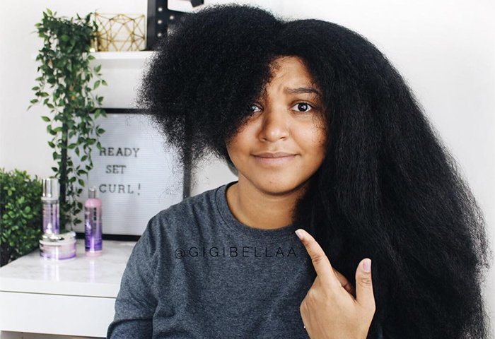

❮
❯
“I feel that the kinks, curls, or tight coils in Afro hair is
beautiful and unique. No other race on this planet has hair like
ours - that makes me proud.”
― Monica Millner, Natural and Free: Journey to Natural Beauty
Hey Curly Queens! This is a space created to encourage natural-haired women to embrace their kinks, coils and curls.
We have gone years resorting to different hair styles other than our
own; treating it with damaging chemicals and heat to "tame the mane,"
when all that is required is a little bit of self-love, embrace and
confidence lathered in with some safe and useful product
and techniques
to
maintaining your lovely curls.
Our natural hair is so versatile! Never try to limit what your hair can
or cannot do. The options are endless, just be safe and creative with
it!